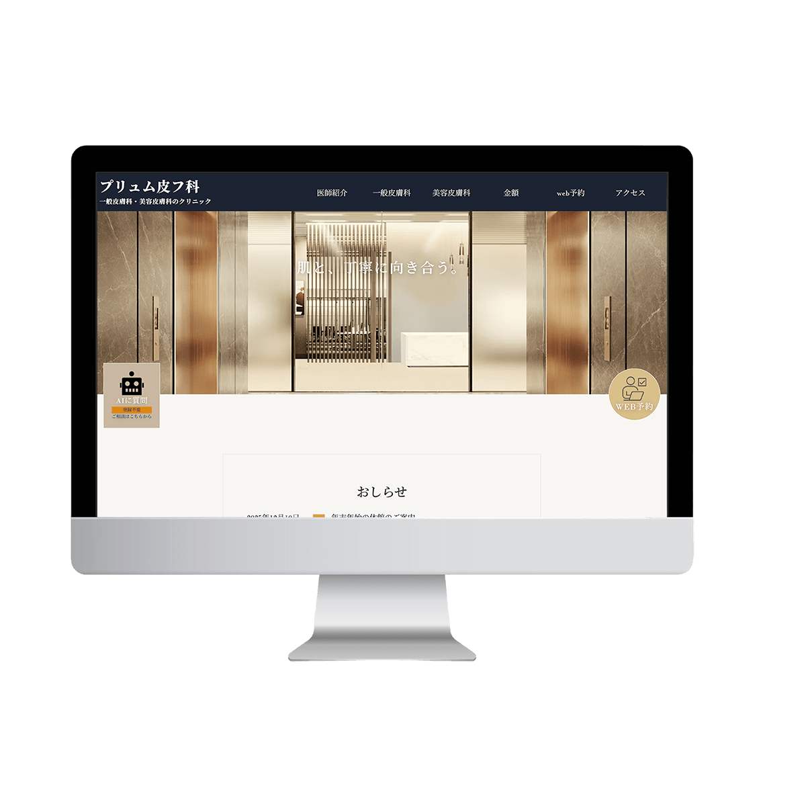
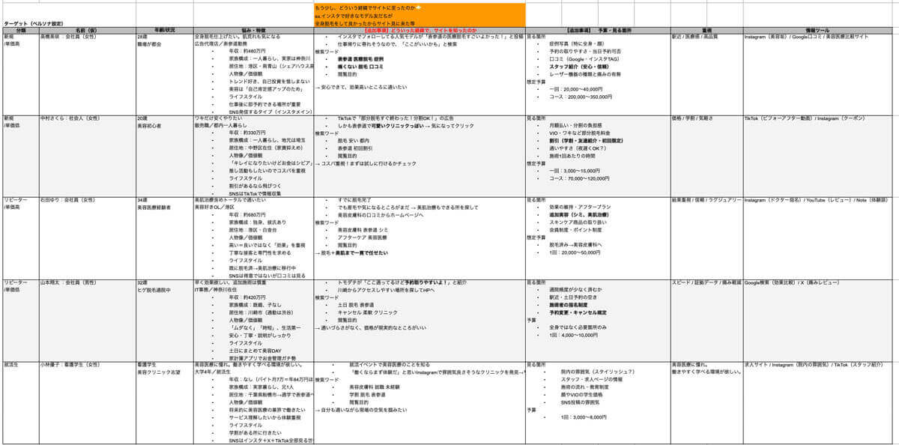
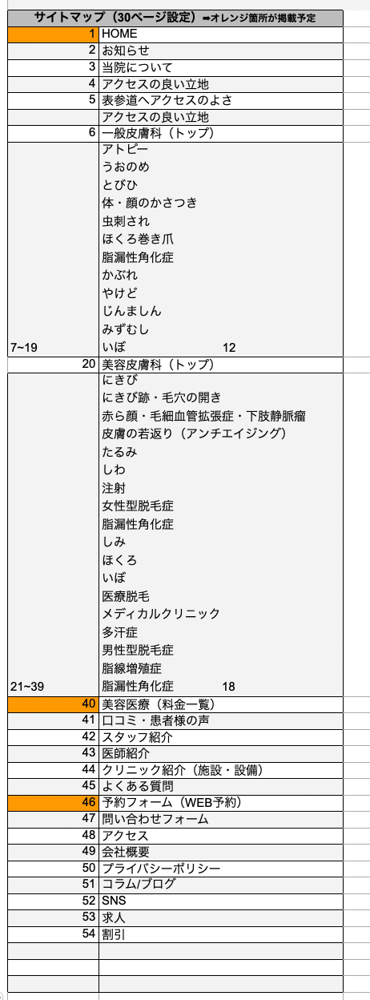
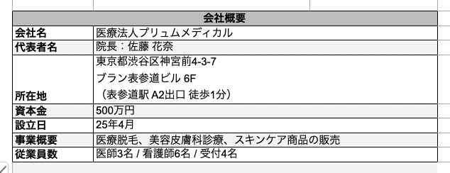

美容皮膚科クリニックの公式Webサイトを想定して制作しました。 施術メニューや料金、予約導線などを整理し、ユーザーが必要な情報に迷わず アクセスできるサイト構造を意識しています。
サイトを見る
ブランド名
プリュム皮フ科
サイトの目的
- 美容皮膚科・医療脱毛の施術予約
- 施術内容・料金の情報提供
- クリニックの信頼性向上
ターゲット
美容皮膚科や医療脱毛に関心のある20〜40代女性を中心に、美容医療を初めて利用するユーザーから、継続的に通院するリピーターまでを想定しています。
ペルソナ

新規2名、リピーター2名、就活で閲覧1名 を設定しました。
コンセプト
美容医療を初めて利用するユーザーでも安心して来院できるよう、 「信頼性」と「分かりやすさ」を軸に設計しました。 施術内容・料金・症例などの情報を整理し、ユーザーが不安を解消しながら 自然に予約へ進める導線設計を意識しています。
デザインについて
美容医療サイトでは、施術内容や料金などの情報を分かりやすく整理し、 ユーザーが必要な情報へ迷わずアクセスできる情報設計を意識しました。 トップページでは診療内容をカテゴリごとに整理し、 一般皮膚科と美容皮膚科の施術メニューを分かりやすく配置しています。
また、医療サイトでは信頼感や安心感が重要であるため、 クリニックの雰囲気や清潔感が伝わるレイアウトと余白設計を意識しました。 ユーザーが施術内容を理解しながら予約へ進めるよう、 各ページから予約フォームへアクセスできる導線設計を行っています。
サイトマップ

全 54ページ
競合サイトリサーチ
合計 54社
美容皮膚科・医療脱毛クリニックのWebサイトを中心に、国内クリニックや美容医療サイトなどを調査しました。
会社概要

美容皮膚科・一般皮膚科の診療内容を整理し、施術ページや料金ページ、予約フォームへスムーズに遷移できるサイト構造を設計しました。
こだわったポイント
ユーザーがいつでも相談や予約を行えるよう、 画面下に「AIに質問」と「WEB予約」のボタンを固定（fixed）で配置しました。 サイト内のどのページからでもすぐに相談や予約へ進めることで、ユーザーが疑問を感じたタイミングで行動できる導線を意識しています。
また、表参道の美容クリニックを想定し、高級感と信頼感を演出するためにゴールドとネイビーを基調とした配色を採用しました。落ち着いた色使いと余白を活かしたデザインにすることで、上品で清潔感のあるクリニックの印象を表現しています。
美容医療では症例を重視するユーザーが多いため、トップページには症例カテゴリを多く配置し、各症例の詳細ページへ遷移できる導線を設計しました。ユーザーが気になる症状や施術から症例へアクセスできるようにしています。
コーディング時間
リサーチ 16h、素材制作 9h、デザイン 5h、コーディング 44h
合計 74h
制作日
2026年1月